Parts and Materials Required
Time Required
- 60 minutes
Removal Procedure
- Put on proper PPE.
- Power down the Panther System.
 Locate the Waste Drawer.
Locate the Waste Drawer.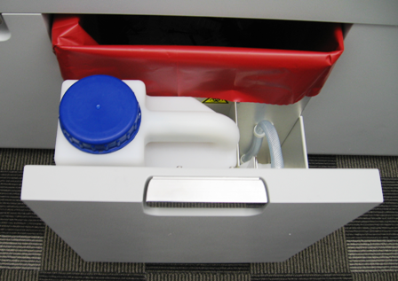
- Slide the Waste Drawer open as far as possible. Empty any liquid or solid waste, if present. Remove the solid waste bag.
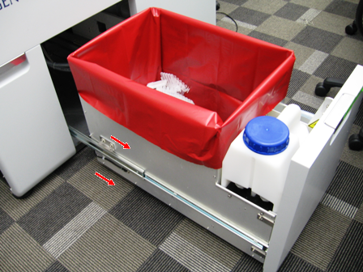
- Using a 3 mm Allen wrench, remove 2 screws from the left side of the Waste Drawer.
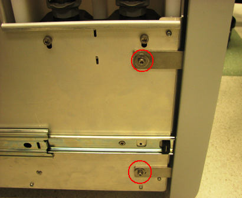
- Using a 3 mm Allen wrench, remove 2 screws from the right side of the Waste Drawer.
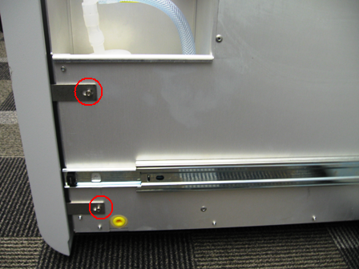
- Remove the 2.5 mm screw that secures the Waste Drawer front cover panel to the bracket.
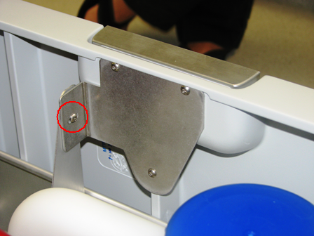
- Remove the Waste Drawer front cover panel from the Waste Drawer and set the Waste Drawer front cover panel aside.
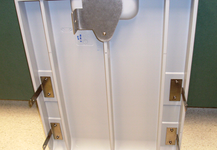
- Open the right side panel door.
- On the Liquid Cooling Module PCB, unplug the waste bag sensor and the bottle empty and full sensor cables.
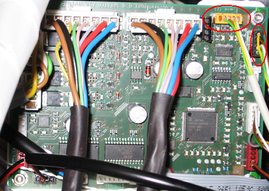
- Remove the waste bag sensor and the bottle empty/full sensor cables from the cable holder.
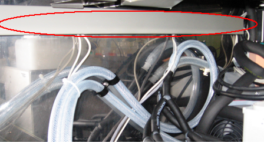
- Disconnect the vacuum tubing from the Vacuum Pump.
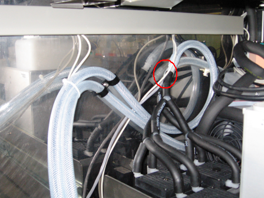
- The drawer is secured to the slides by a total of 6 mounting tabs, 3 on each side. Locate the front tabs of the linear slide mount. Lift the drawer up while pushing the slide downward to disengage the slide from the drawer. This may require considerable force. Alternatively, you may insert large flat-head screwdriver into the gap and twist to pry the drawer free as shown in the following picture.
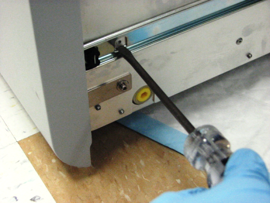
- Remove the drawer from the rear slide tabs by pulling the drawer forward and pushing the slide back.
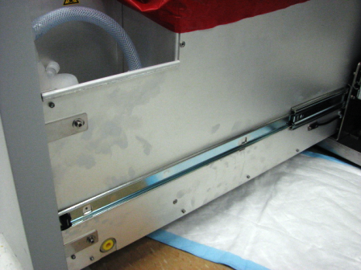

|
Note—If returning the module, decontaminate the module and complete the COD/OBF/RMA Form [19-02-APX-A]. |
Replacement Procedure
- Reverse the removal procedure.
Note—Adjust the front cover so that it aligns properly and flush with the other system front covers. - Push the drawer completely in.
- Pull out the Waste Drawer so that the Waste Drawer front cover panel can be re-installed.
- Place the front cover panel in front of the Waste Drawer and align the brackets with the screw holes.
- Using a 3 mm Allen wrench, insert and tighten two 3 mm screws, washers, and lock washers on the left side of the drawer.
- Using a 3 mm Allen wrench, insert and tighten two 3 mm screws, washers, and lock washers on the right side of the drawer.
- Attach the bracket to the Waste Drawer front cover panel door with the 2.5 mm screw.
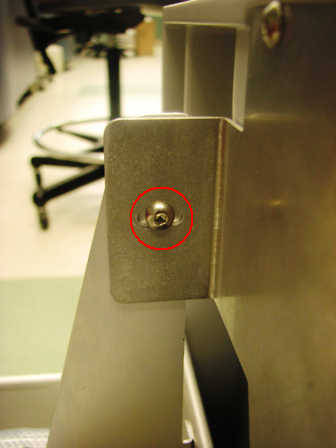
- Route the waste bag sensor and bottle full/empty sensor cables up along the vacuum hose and along the inside of the cable holder. The Red line in the picture below shows the path of the cable.
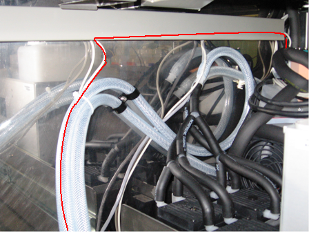
- Plug the waste bag sensor and bottle full/empty sensor cables into the Liquid Cooling Module PCB.
- Route the vacuum hose along the back of the system to the Vacuum Pump and connect the vacuum hose to the Vacuum Pump. The Red line in the picture below shows the path of the cable. The picture below is for illustrative purposes only. The picture below shows the Config1 Vacuum Pump. The vacuum configuration on your system may differ.
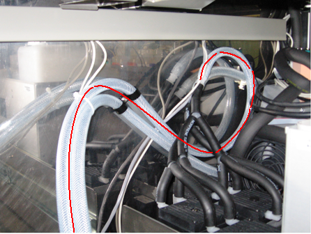
- Close the left and right side panel doors.
- Close the Waste Drawer
- Install the Panther System firmware to the module.
Verification
- From SS verify that the Waste Drawer full and empty sensors work.
- Verify proper vacuum level is monitored by Panther System Software.
 button at the top of the page to send feedback, comments, or change requests.
button at the top of the page to send feedback, comments, or change requests.{kind=link}